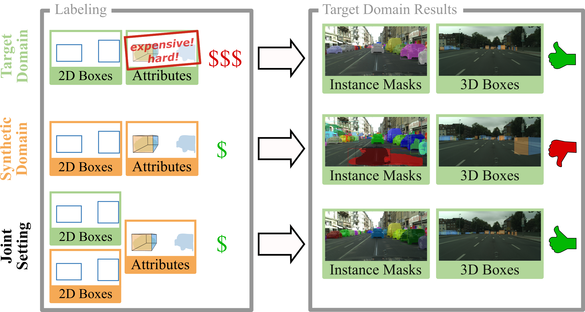
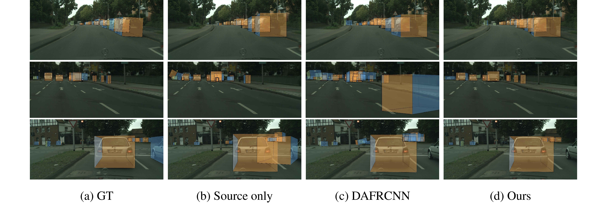
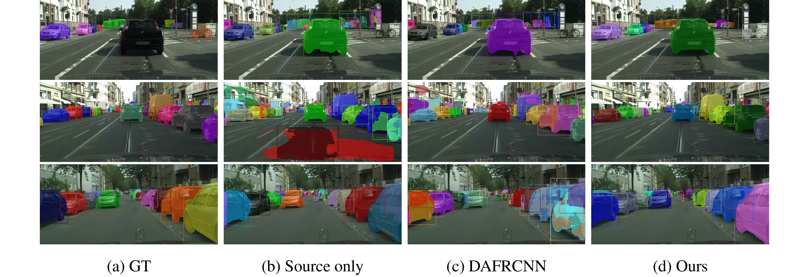

!!! PAGE UNDER CONSTRUCTION !!!
Learning Cascaded Detection Tasks with
Weakly-Supervised Domain Adaptation
1 Mercdes-Benz AG R&D
2 University of Tübingen
3 Robert Bosch GmbH
4 Max Planck Institute for Intelligent Systems Tübingen
IV 2021

TL:DR: We propose a weakly-supervised domain-adaptation setting that
enables learning cascaded detection tasks at a reduced
annotation effort while still achieving competitive
performance by utilizing weak 2D bounding box labels in
both domains.
Abstract
In order to handle the challenges of autonomous driving, deep
learning has proven to be crucial in tackling increasingly
complex tasks, such as 3D detection or instance segmentation.
State-of-the-art approaches for image-based detection tasks tackle
this complexity by operating in a cascaded fashion: they first
extract a 2D bounding box based on which additional attributes,
e.g. instance masks, are inferred. While these methods perform
well, a key challenge remains the lack of accurate and cheap
annotations for the growing variety of tasks. Synthetic data
presents a promising solution but, despite the effort in domain
adaptation research, the gap between synthetic and real data
remains an open problem. In this work, we propose a weakly
supervised domain adaptation setting which exploits the structure
of cascaded detection tasks. In particular, we learn to infer
the attributes solely from the source domain while leveraging
2D bounding boxes as weak labels in both domains to explain
the domain shift. We further encourage domain-invariant features
through class-wise feature alignment using ground-truth
class information, which is not available in the unsupervised
setting. As our experiments demonstrate, the approach is
competitive with fully supervised settings while outperforming
unsupervised adaptation approaches by a large margin.
A Weakly-Supervised Domain Adaptation Setting
Qualitative Results
Below we show a qualitative comparison of models trained in
our setting to models trained on the source domain only
without any adaptation and models trained using an unsupervised
domain adaptation method for object detection
(
DAFRCNN, Chen et al.)
on the cascaded detection tasks of monocular 3D detection
and instance segmentation.
Monocular 3D Detection

Instance Segmentation

Acknowledgements
This publication was created as part of the research project
"KI Delta Learning" (project number: 19A19013A) funded by the
Federal Ministry for Economic Affairs and Energy (BMWi) on the
basis of a decision by the German Bundestag.
The template for this website was borrowed and adapted from
Despoina Paschalidou.